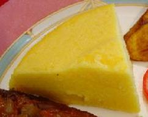

Keshi Yena
Keshi Yena is een traditioneel Curaçaos gerecht dat bestaat uit een gevulde kaasbol. Dit gerecht stamt uit de koloniale tijd en werd gemaakt van de overgebleven kaaskorsten van de Nederlandse kolonisten, gevuld met restjes vlees en groenten.

Ingrediënten (4-6 personen)
- 500g Edammer kaas (hele bol, uitgehold)
- 400g kipfilet, fijngesneden
- 2 uien, fijngesneden
- 2 tomaten, in blokjes
- 2 paprika's, in blokjes
- 100g rozijnen
- 50g groene olijven, gesneden
- 2 teentjes knoflook, fijngehakt
- 2 eetlepels tomatenpuree
- 1 theelepel Worcestershiresaus
- 2 eieren, losgeklopt
- Peper en zout naar smaak
Bereidingswijze
- Verwarm de oven voor op 180°C
- Hol de kaas voorzichtig uit en bewaar de binnenkant
- Bak de kip met ui en knoflook
- Voeg tomaten, paprika, tomatenpuree en kruiden toe
- Meng rozijnen en olijven erdoor
- Voeg de bewaarde kaas toe aan het mengsel
- Meng de losgeklopte eieren erdoor
- Vul de kaasbol met het mengsel
- Wikkel in aluminiumfolie
- Bak 45 minuten in de oven
Tips
- Serveer met rijst of funchi (polenta)
- De vulling kan naar wens worden aangepast
- Zorg dat de kaasbol goed afgesloten is voor het bakken